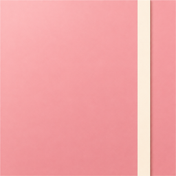
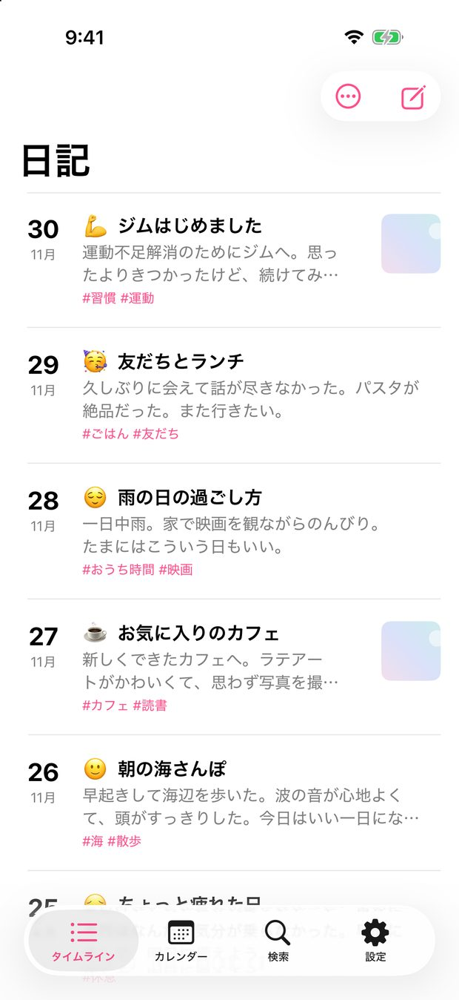
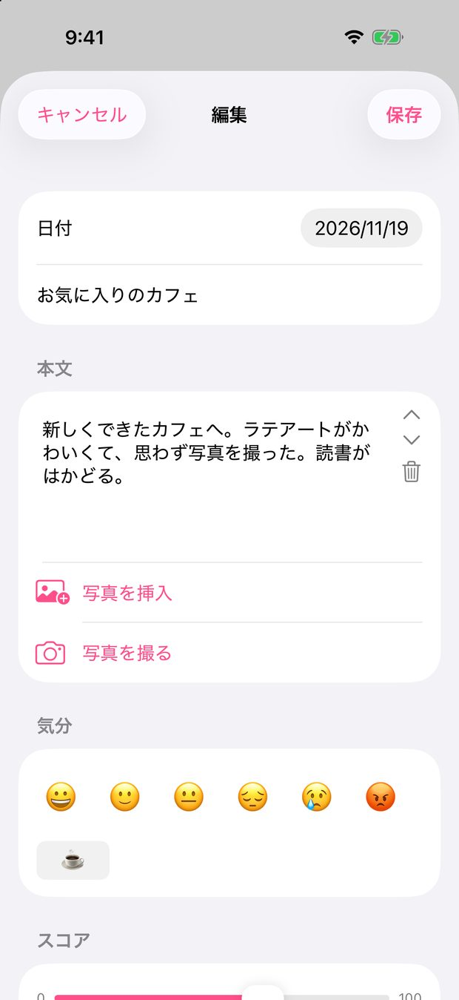
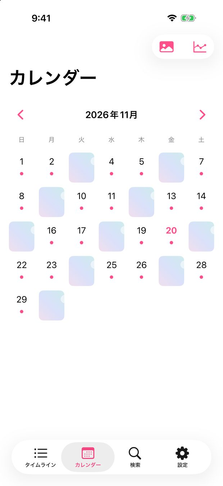
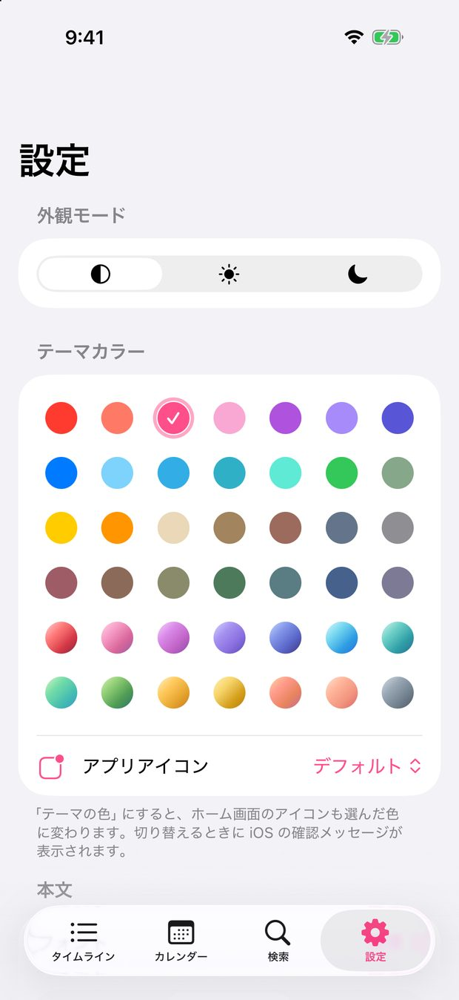
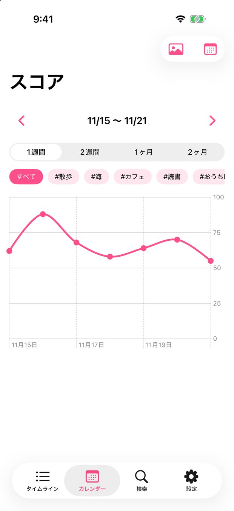

日記 - 今日を残すノートiPhone / iPad ・ 無料毎日きちんと書けなくていい。カレンダーを開けば、書き忘れた日にその日撮った写真が薄く浮かびます。そこから「そういえば」と書きはじめられる日記アプリです。
App Store で見る無料
CONCEPT
日記アプリはすでにたくさんあります。それでも作ったのは、「書けなかった日」の扱い方で続くかどうかが決まる、と思ったからです。
一日あけると、空白のページが責めてくるように感じます。二日あくと、もう開かなくなる。連続記録の数字が途切れた瞬間にやめてしまった経験が、私にもありました。だからこのアプリには、連続日数を競わせる仕組みを入れていません。
代わりに置いたのが、その日に撮った写真です。カメラロールはいちばん正直な記録で、書けなかった日にも何かしら残っています。カレンダーにそれを薄く重ねておけば、十日ぶりに開いた日でも「あ、これ食べたな」から書きはじめられます。
静かで、急かさなくて、気が向いた日にだけ開けばいい。そういう日記であってほしいと思っています。

タイトルも気分もスコアもタグも、すべて任意です。本文だけ書いて閉じても日記になります。使わない項目は設定から隠せるので、画面は最後まで散らかりません。写真は1件に10枚まで入れられ、その場でカメラも開けます。

カレンダーでは、まだ日記のない日にその日撮った写真が薄く表示されます。見覚えのある一枚が目に入れば、記憶はあっさり戻ってきます。編集画面でも、その日の写真から直接選んで本文に入れられます。もちろん設定でオフにできます。

鮮やかな単色、和の落ち着いた色、グラデーション。アプリ全体の色を42色から選べます。ホーム画面のアプリアイコンも、選んだ色に合わせて変えられます。書体・文字サイズ・行間も調整できるので、読み返しやすい見た目に整えられます。

その日の調子を0〜100のスコアで残しておくと、1週間・1か月・2か月の折れ線で振り返れます。タグで絞り込めば、「この予定のあとは決まって落ちている」といった傾向も見えてきます。要らなければ、項目ごと非表示にできます。
毎日の記録まわりで必要になるものは、ひと通り入っています。
ホーム画面とロック画面に、今月書いた日数と最新の日記を表示。コントロールセンターから1タップで書きはじめられます。
「日記を書く」と話しかけて新規作成。Spotlight 検索からも開けます。
本文・タイトル・タグを横断して検索。タグで分類しておけば、テーマごとに読み返せます。
同じ Apple アカウントの端末どうしで同期。機種変更のときもそのまま引き継げます。
日記と写真をまとめてファイルに書き出し、あとから戻せます。
PDF とテキストで保存。印刷して紙で残すこともできます。
決まった時刻にそっと通知。未来の日付に書いておけば、その日に知らせます。
Face ID・パスコードで、起動時にロックできます。
日本語・英語・韓国語・簡体字中国語。アプリ内でいつでも切り替えられます。
アカウント登録もログインも要りません。書いた日記は端末の中（と、オンにした場合はあなた自身の iCloud）に保存されます。開発者のサーバーに日記が送られることはありません。写真へのアクセスは、その日の写真を候補として出すときだけ使い、どこにも送信しません。
無料のままでも、日記の作成・写真・タグ・検索・同期はすべて使えます。プレミアムにすると広告が消え、書き出しの制限がなくなります。月額・年額・買い切りから選べ、年額は1週間の無料お試しつきです。
バナーも全画面広告も表示されなくなります。
無料版では直近3件まで。プレミアムではすべての日記を書き出せます。
他のアプリに移したいときにも。
テーマカラーを42色に拡張（和の落ち着いた色を追加）。アプリアイコンをテーマカラーに合わせて切り替えられるように。カレンダーで、まだ日記のない日にその日の写真を薄く表示。
編集画面で、その日に撮った写真から選べるように（まとめて複数枚も可）。「写真を挿入」の反応を改善。
ホーム画面・ロック画面のウィジェットとコントロールセンターの「日記を書く」。Siri・ショートカット・Spotlight に対応。
おすすめアプリ欄、バックアップと引き継ぎ、タイムラインの全文表示、細かな調整。